Gadwal
Intro & History: Gadwal sarees come from the town of Gadwal in Jogulamba Gadwal district, Telangana. The weaving tradition flourished in the 19th century under the patronage of the Gadwal Samsthanam rulers and later the Nizams of Hyderabad. The unique Kupadam technique of interlocking weaves has been passed down through generations of weaver families.
Significance & Work: GI-tagged, Gadwal sarees are famous for their innovative construction: the cotton body is woven separately and then interlocked (Kupadam) with a pure silk border and pallu, creating a seamless yet distinct contrast. The saree is exceptionally light — often foldable into a matchbox — yet rich with zari work, temple motifs, and vibrant colors. It holds sacred status in many South Indian temples (including Tirupati) and is worn for weddings, festivals, and rituals. Gadwal represents Telangana's royal textile legacy — elegant, durable, and deeply symbolic.
 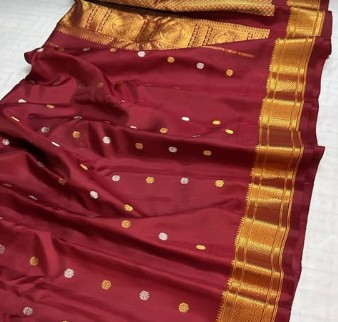
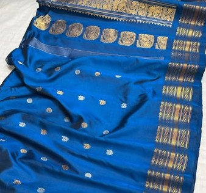
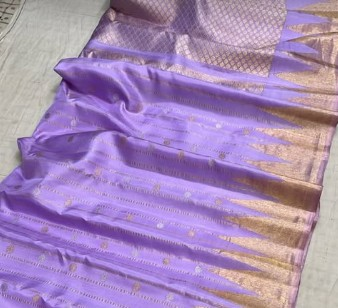
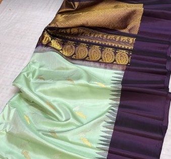
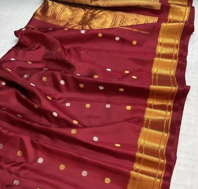
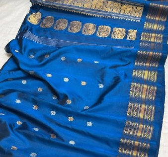
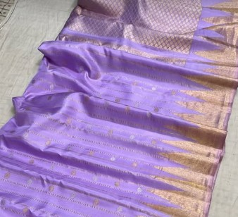
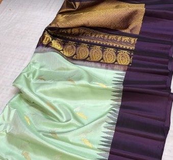
 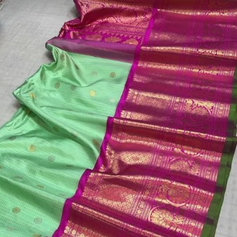
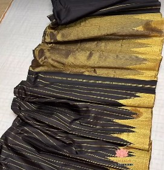
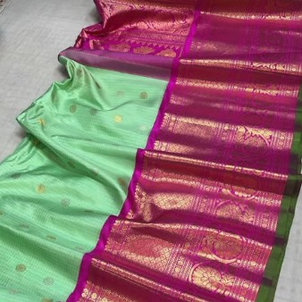
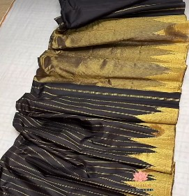